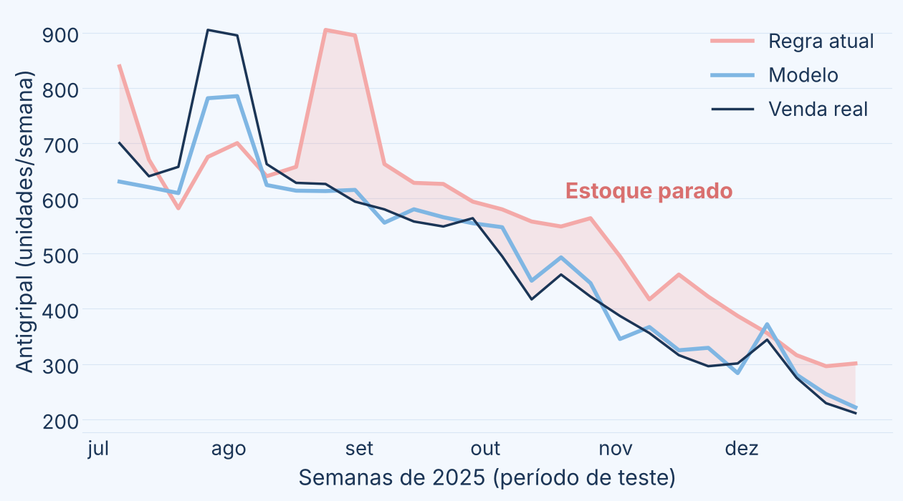

Farmácias Boa Dose: previsão de demanda
Previsão das vendas semanais de 20 produtos de uma rede fictícia de farmácias, para substituir a regra de "repetir a semana passada" por um pedido de compra sugerido.
- Erro de previsão 52% menor
- Sazonalidade, promoções e feriados
- 6 perguntas de negócio